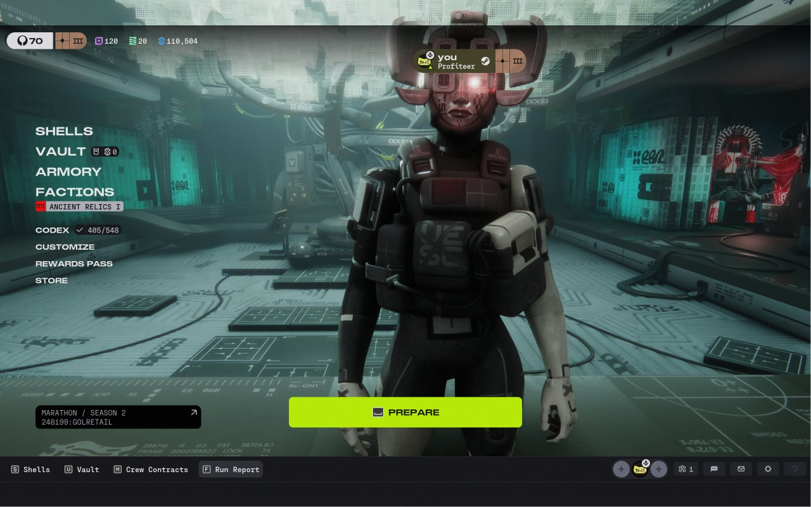
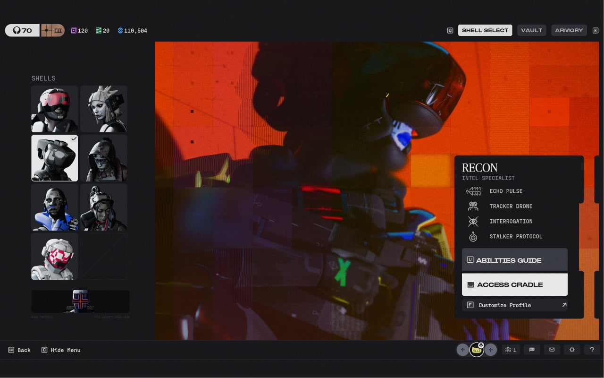

Main Hub của Marathon với giao diện là một nhân vật đứng giữa bố cục lobby, bên phải là Menu, bên trên có một thanh trạng thái mô tả account của người chơi. Giao diện thoáng mắt và tối giản, tập trung vào các yếu tố chính.
Ở giữa Lobby, được bố trí một nút “Prepare” nổi bật, nhằm kích thích người chơi bắt đầu một ván chơi, với gam màu chủ đạo Neon.
Đặt phía trên cùng, hiển thị thông tin Account, cấp độ và tài nguyên của người chơi.
Nhân vật Runner đứng giữa bố cục Lobby, tạo điểm nhấn thị giác thoáng mắt và tối giản.
Bố trí gọn ở cạnh phải màn hình, giúp điều hướng nhanh mà không che khuất nhân vật.
Đặt ở vị trí trung tâm với gam màu Neon nổi bật, kích thích người chơi bắt đầu trận đấu.

Lobby của Marathon áp dụng phương pháp thu hút người chơi phổ biến là: Cho phép người chơi được quyền Customize nhân vật chính ở Lobby. Người chơi chọn 1 trong các Characters và Skins để hiển thị ở màn hình chính. Điều này làm cho màn hình Lobby có tính Cá nhân hóa hơn, tạo trải nghiệm tốt khi log in vào game.
Người chơi tự do chọn Runner Shell và trang phục (Skin) yêu thích để trưng bày trực tiếp ngay tại sảnh chính.
Biến không gian Main Hub thành dấu ấn riêng của từng người chơi thay vì một màn hình chờ tĩnh giống nhau.
Tạo cảm giác hứng khởi và gắn kết với nhân vật ngay từ khoảnh khắc đầu tiên đăng nhập vào game.
